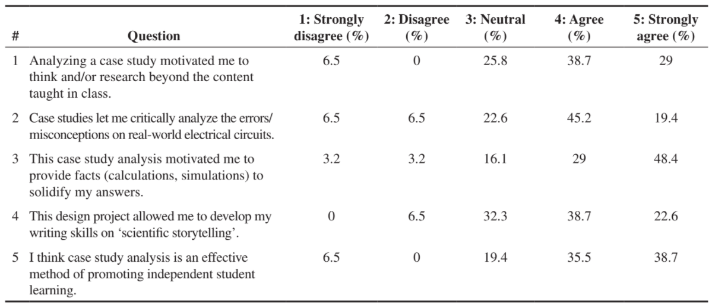
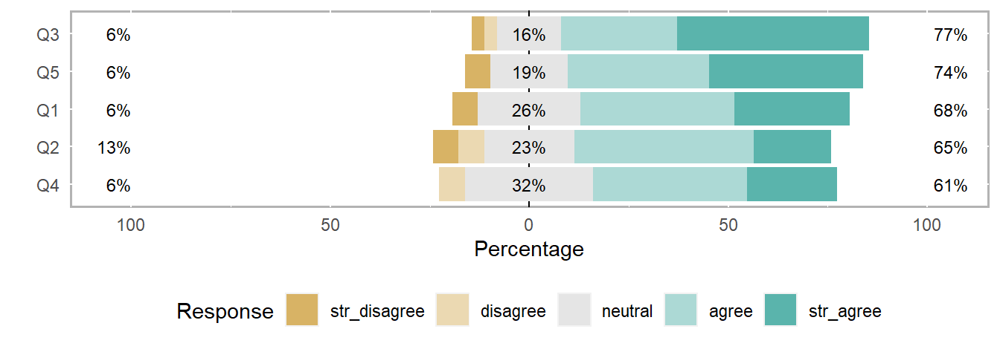
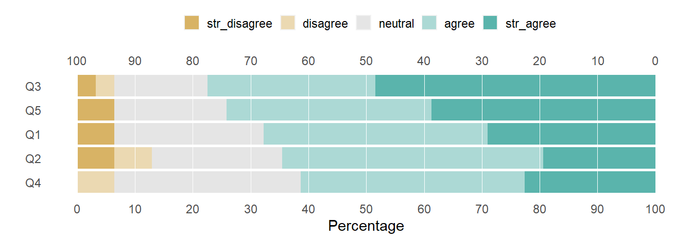
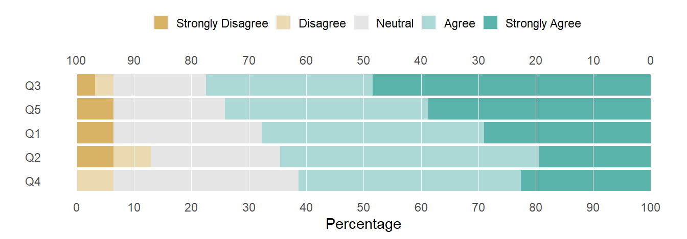
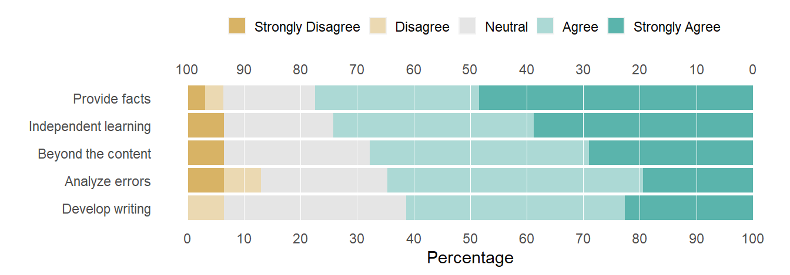
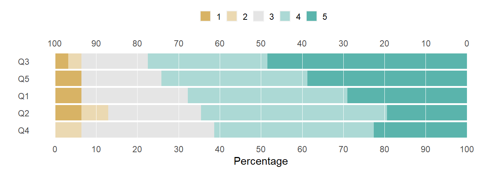

How to prepare different forms of Likert-style survey data for the R likert package and edit the results to create 100% stacked-bar charts.
Author
Richard Layton
Published
2022-02-13
Summary
Given Likert-style survey data in one of three common forms, I shape the data to suit the input requirements of the likert R package and use the output to create 100% stacked-bar charts. In each case, I illustrate two routine revision tasks: editing the question labels on the bars and editing the opinion levels in the legend.
This post is a tutorial on how to prepare different forms of Likert-style survey data for the R likert package and using its output to create 100% stacked-bar charts. I focus on preparing the data for likert() input and editing its output for the final chart. For exploring the package functionality more fully, I recommend the tutorials by Laura Mudge (2019) and Jake Chanenson (2021).
In a companion post (not yet ported) I develop the R script for constructing the 100% stacked-bar chart and discuss the rationale for selecting it as a more effective design for Likert-style survey data.
I use data.table, ggplot2, and likert R packages. An appealing feature of likert is its compatibility with data.table and ggplot2 functionality. Note that to reproduce this work, likert must be at least version 1.3.6 (currently the development version).
The R code for the post is listed under the “R code” pointers.
R code
# packageslibrary("data.table")library("ggplot2")library("likert")# function based on likert.plot to construct a 100% stacked bar chart my_breaks <-seq(-100, 100, 10)likert_100_pct_bar <-function(likert_list) {plot(likert_list, plot.percent.neutral =FALSE,plot.percent.high =FALSE,plot.percent.low =FALSE,neutral.color ="grey90", include.center =TRUE, centered =FALSE) +geom_hline(yintercept = my_breaks, color ="white", size =0.25) +scale_y_continuous(limits =c(0, 100), breaks = my_breaks, sec.axis =sec_axis( # second scaletrans =function(z) z -100, breaks = my_breaks, labels =as.character(abs(my_breaks)))) +theme(panel.background =element_blank(),legend.key.size =unit(4, "mm"),legend.title =element_blank(),axis.ticks =element_blank(), legend.justification =0.5, legend.position ="top")}# labeling vectorsopinion_labels <-c("Strongly Disagree", "Disagree", "Neutral", "Agree", "Strongly Agree")question_labels <-c("Beyond the content", "Analyze errors", "Provide facts", "Develop writing", "Independent learning")# functions for renaming columnssetnames_Item <-function(x) {setnames(x, old ="q_no", new ="Item", skip_absent =TRUE)}setnames_opinion_labels <-function(x) {setnames(x, old =c("str_disagree", "disagree", "neutral", "agree", "str_agree"), new = opinion_labels, skip_absent =TRUE)}
Data
The practice data in my example are from an engineering education article by Ashanthi Maxworth (2021), selected because the data are compact and the survey includes a Neutral option. The table from the original article is shown below. There were 31 respondents.

(Original Table 3) Percentage student responses for each question in the feedback form.
Survey data are most likely to be reported in one of three forms: summary percentages (as above), summary counts, or row-records. The likert() function accepts any of these forms as input. The practice data, in all three forms, are available in the blog data directory as CSV files.
The likert() function accepts input data frames having this structure. The salient characteristics are:
one row per question
first column is named Item and contains the question labels
remaining columns are named for the opinion levels in increasing order left to right
column values are the counts of respondents choosing that option
the sum of row counts is the number of respondents answering that question
likert() output
To operate on this data frame, we assign it to the summary argument of the likert() function. The result is a list of various statistics about the Likert-style data. Note that the results output preserves the data.table structure of the input.
R code
# create the likert listlikert_list <-likert(summary = dt)# examine its structurestr(likert_list)
Data frame. Percentage of responses by question, opinion level, and group.
items
Data frame. Copy of original row-record input (NULL in this example).
grouping
Copy of original grouping vector that subsets results (NULL in this example).
nlevels
Integer. Number of opinion levels used in the calculations.
levels
Character. Ordered vector of opinion level labels.
Basic chart
To use this list to create a chart, we assign it as the first argument of the plot() function.
R code
# create the basic chart (default digits = 0 throws an error)plot(likert_list, digits =1)

100% stacked bar chart
The same list can be used to create a 100% stacked-bar chart by assigning it as the first argument of likert_100_pct_bar()—a function (defined at the top of the post) that wraps likert.plot and sets the likert arguments and ggplot2 functions that produce my preferred design.
R code
# customize the chartlikert_100_pct_bar(likert_list)

Legend key
The legend key is edited via the column names of likert_list$results. Viewing its column names,
The change can be seen in the structure above and in the revised figure.
R code
# create the chartlikert_100_pct_bar(likert_list)

Question labels
The question labels are edited via the values in the Item column of likert_list$results. Viewing the first column in vector form,
R code
likert_list$results[["Item"]]
[1] "Q1" "Q2" "Q3" "Q4" "Q5"
Using a vector of question labels defined at the top of the post, I substitute them for the values in the original Item column.
R code
# recode the question labelslikert_list$results[, Item := question_labels]# examine the resultstr(likert_list)
List of 5
$ results :Classes 'data.table' and 'data.frame': 5 obs. of 6 variables:
..$ Item : chr [1:5] "Beyond the content" "Analyze errors" "Provide facts" "Develop writing" ...
..$ Strongly Disagree: num [1:5] 6.45 6.45 3.23 0 6.45
..$ Disagree : num [1:5] 0 6.45 3.23 6.45 0
..$ Neutral : num [1:5] 25.8 22.6 16.1 32.3 19.4
..$ Agree : num [1:5] 38.7 45.2 29 38.7 35.5
..$ Strongly Agree : num [1:5] 29 19.4 48.4 22.6 38.7
..- attr(*, ".internal.selfref")=<externalptr>
$ items : NULL
$ grouping: NULL
$ nlevels : num 5
$ levels : chr [1:5] "str_disagree" "disagree" "neutral" "agree" ...
- attr(*, "class")= chr "likert"
Again, the change is seen in the structure above and in the revised figure.
R code
# create the chartlikert_100_pct_bar(likert_list)
This approach is somewhat ad-hoc, but works as long as you are careful to write the substitutions in the correct order. If I were programming these steps, I would create additional tables (as in a database) and join the substitutions by clearly assigned key variables.
Or edit the labels first
Alternatively one can produce the same result by editing the opinion labels and question labels of the initial data frame before submitting it to likert(). The row and column structure reflects the changes.
R code
# read prepared datadt <-fread("data/case-study-2021-count.csv")# rename columnssetnames_Item(dt)setnames_opinion_labels(dt)# recode the question labelsdt[, Item := question_labels]# examine the resultdt[]
Read the prepared data file in summary percentage form. The percentages are directly from the table in the source article. Like before, I rename the first column Item for consistency with the likert() function.
R code
# read prepared datadt <-fread("data/case-study-2021-percent.csv")# rename first columnsetnames_Item(dt)
Item
str_disagree
disagree
neutral
agree
str_agree
Q1
6.5
0.0
25.8
38.7
29.0
Q2
6.5
6.5
22.6
45.2
19.4
Q3
3.2
3.2
16.1
29.0
48.4
Q4
0.0
6.5
32.3
38.7
22.6
Q5
6.5
0.0
19.4
35.5
38.7
Option 1: Convert percentages to counts
This option is the most direct approach, assuming we know the number of respondents to each question. In this example we do (though this is not always the case). In this case study we have 31 respondents and all respondents replied to all the questions.
R code
# number of respondents in this exampleN_respondents <-31# identify the numeric columnssel_cols <-names(dt)[sapply(dt, is.numeric)]# convert percentages to integer countsdt[, c(sel_cols) :=lapply(.SD, function(x) round(N_respondents * x/100, 0)), .SDcols = sel_cols]
Item
str_disagree
disagree
neutral
agree
str_agree
Q1
2
0
8
12
9
Q2
2
2
7
14
6
Q3
1
1
5
9
15
Q4
0
2
10
12
7
Q5
2
0
6
11
12
This data structure is identical to the one we worked with in the previous section, so we know how to work with it.
Option 2: Use percentages as-is
This option might be necessary if we do not know the number of respondents replying to each question. Start by reading the data file and again rename the first column Item for consistency with the likert() function.
R code
# read prepared datadt <-fread("data/case-study-2021-percent.csv")# rename first columnsetnames_Item(dt)
Item
str_disagree
disagree
neutral
agree
str_agree
Q1
6.5
0.0
25.8
38.7
29.0
Q2
6.5
6.5
22.6
45.2
19.4
Q3
3.2
3.2
16.1
29.0
48.4
Q4
0.0
6.5
32.3
38.7
22.6
Q5
6.5
0.0
19.4
35.5
38.7
With one row per question, the row percentages should sum to 100%. They do, but with an error due to rounding in the reported percentages.
If we ignore the rounding error, it can introduce small but noticeable errors in the bar lengths in the chart. A simple remediation is to subtract the small errors from the neutral columns so that all rows sum to 100% exactly. The adjusted Neutrals are shown below.
R code
# subtract error from neutraldt[, adjusted_neutral := neutral - rounding_error]# examine the resultdt[, .(Item, neutral, rounding_error, adjusted_neutral)]
Replacing neutral with the adjusted neutral and deleting the temporary information columns yields the data structure I need for the summary percentage form:
R code
# adjust neutraldt[, neutral := adjusted_neutral]# delete temporary information columnsdt[, c("row_total", "rounding_error", "adjusted_neutral") :=NULL]# examine the resultdt[]
To operate on this data frame, we again use the summary argument of likert(). The result is a list similar to that produced when we operated on summary counts and the same familiar chart.
R code
# create the likert listlikert_list <-likert(summary = dt)# examine its structurestr(likert_list)
# 100% stacked bar chartlikert_100_pct_bar(likert_list)

Row records
In row-record form, everything we want to know about an individual is in one row, that is, a row-record for that individual. Thus the number of rows equals the number of respondents.
I made up a practice data set in row-record form with 31 rows and 6 columns. These are fictitious data I designed specifically to have the same summary characteristics as the published summary data used earlier.
Read the prepared data file in row-record form and view the data frame.
R code
# read observed datadt <-fread("data/case-study-2021-row-record.csv")# examine the resultdt[]
The first column is a fictitious respondent ID. The remaining columns represent responses to the survey questions. For basic charts like those shown here, all columns should be question responses, so I delete the ID. Though I don’t cover it here, additional non-question columns are allowed for grouping the results. See, for example, (Mudge 2019).
R code
# delete the ID columndt[, obs :=NULL]# examine the resultdt[]
For the likert() function to accept data in this form, all question response columns must be factors with identical sets of levels. Reformatting the columns and checking the structure yields,
R code
# reformat columns as factorssel_cols <-names(dt)dt[, c(sel_cols) :=lapply(.SD, function(x) factor(x, levels =1:5)), .SDcols = sel_cols]# examine the resultdt[]
One row per respondent. The number of rows equals the number of respondents.
One column per question. The column name is the question label. The number of columns equals the number of survey questions.
Each column is a factor with an identical set of levels. The number of levels equals the number of answer options in the survey.
Column values are the encoded opinions of the respondent: 1 (Strongly Disagree), 2 (Disagree), 3 (Neutral), etc.
likert() output
To operate on a row-record data frame, we assign it to the items argument of the likert() function. The result is again a list.
However, unlike the previous output lists, the data.table structure of the input has not been preserved. I use data.table syntax in subsequent operations, so I convert both results and items to data.tables.
R code
# create likert list likert_list <-likert(items = dt)# convert output data frames to data.tablessetDT(likert_list$results)setDT(likert_list$items)# examine the resultstr(likert_list)
Data frame. Percentage of responses by question, opinion level, and group.
items
Data frame. Copy of original row-record input.
grouping
Copy of original grouping vector that subsets results (NULL in this example).
factors
Copy of original vector matching columns to factors (NULL in this example).
nlevels
Integer. Number of opinion levels used in the calculations.
levels
Character. Ordered vector of opinion level labels.
Draft chart
With row-record data, the plot function requires both results and items from the output list. The chart is familiar, but the opinion labels are now the integers used to encode the survey results.
R code
likert_100_pct_bar(likert_list)

Legend key
As before, the legend key is edited via the column names of likert_list$results. Note the corresponding changes in the likert list and chart.
R code
# recode the opinion optionssetnames(likert_list$results, old =as.character(1:5), new = opinion_labels, skip_absent =TRUE)# examine the resultstr(likert_list)
With row-record data, both results and items data frames must be revised to edit the question labels. Note the corresponding changes in the likert list and chart.
R code
# recode Item column of $resultslikert_list$results[, Item := question_labels]# recode column names of $itemssetnames(likert_list$items, old =c("Q1", "Q2", "Q3", "Q4", "Q5"), new = question_labels, skip_absent =TRUE)# examine the resultstr(likert_list)
As before, we have an alternative approach: one can produce the same result by editing the opinion labels and question labels of the data frame before submitting it to likert(). Question labels are substituted for the column names. Opinion levels (as text) are substituted for the encoded integers, i.e., 1 = Strongly Disagree through 5 = Strongly Agree.
To illustrate, I start with a fresh row-record data set.
R code
# read prepared datadt <-fread("data/case-study-2021-row-record.csv")# delete the ID columndt <-subset(dt, select =-c(obs))# recode the question labels in the column namessetnames(dt, old =c("Q1", "Q2", "Q3", "Q4", "Q5"), new = question_labels, skip_absent =TRUE)# recode integer values with opinion options sel_cols <-names(dt)dt[, (sel_cols) :=lapply(.SD, function(x) fcase( x ==1, opinion_labels[1], x ==2, opinion_labels[2], x ==3, opinion_labels[3], x ==4, opinion_labels[4], x ==5, opinion_labels[5])), .SDcols = sel_cols]# convert columns to factors dt <- dt[, lapply(.SD, function(x) factor(x, levels = opinion_labels)), .SDcols = sel_cols]# examine the resultdt[]
Rounding the digits, we produce a publication-ready table. I’m assuming the abbreviated question labels are OK—if not, each could be replaced with its complete assertion. In this form, the rows of the table are in the same order as the rows of the chart—a structure that could be useful to the reader.
Item
Strongly Disagree
Disagree
Neutral
Agree
Strongly Agree
Beyond the content
6.5
0.0
25.8
38.7
29.0
Analyze errors
6.5
6.5
22.6
45.2
19.4
Provide facts
3.2
3.2
16.1
29.0
48.4
Develop writing
0.0
6.5
32.3
38.7
22.6
Independent learning
6.5
0.0
19.4
35.5
38.7
The values in this table were computed by likert from the fictitious row-record data. The numbers agree with the source data table.
Additional software credits
likert for manipulating and plotting Likert-style data